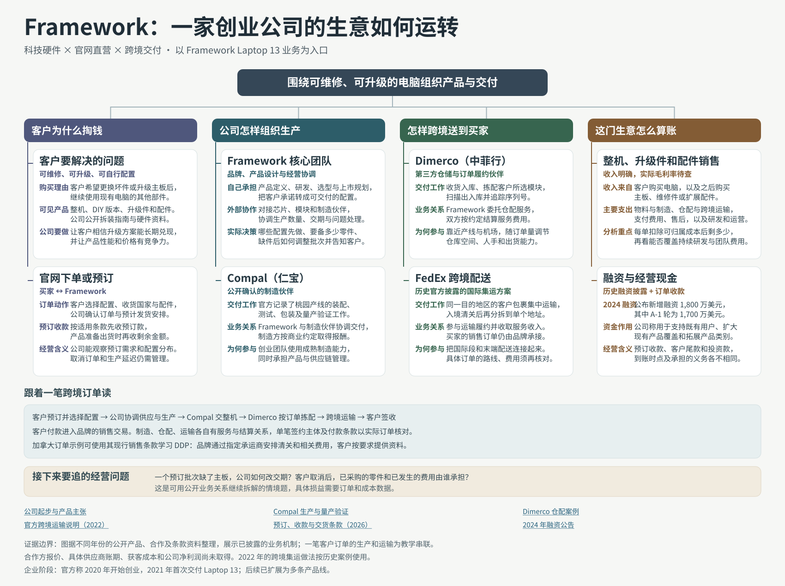
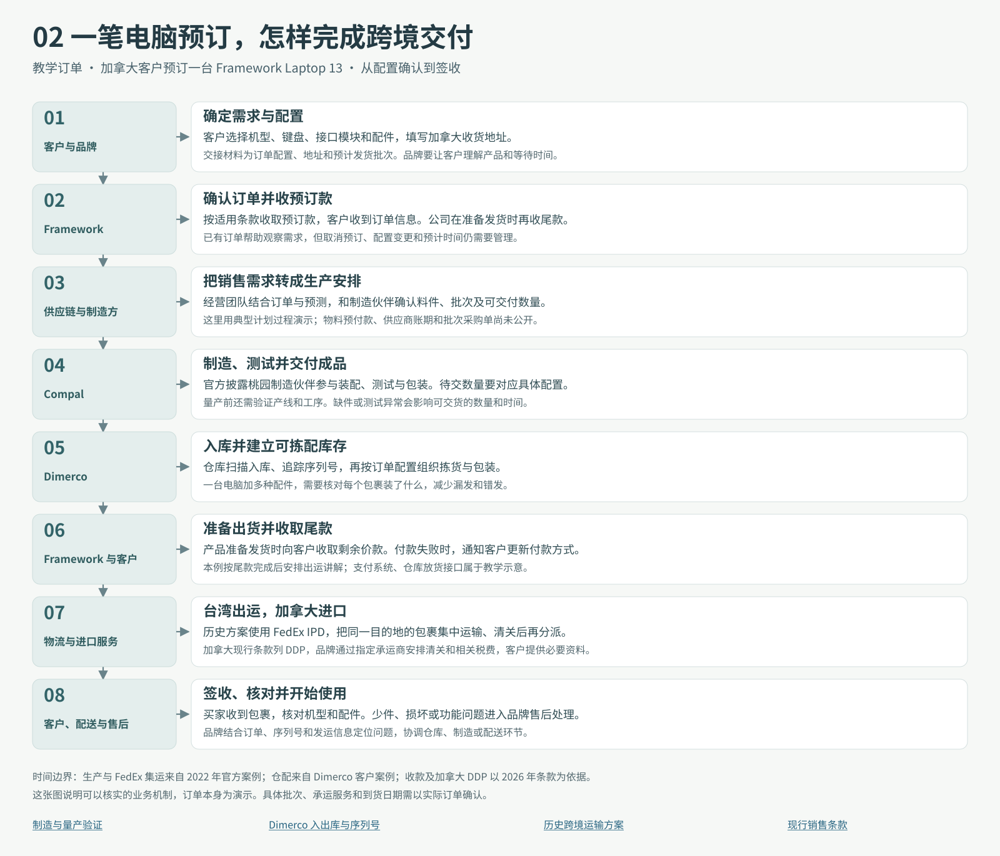
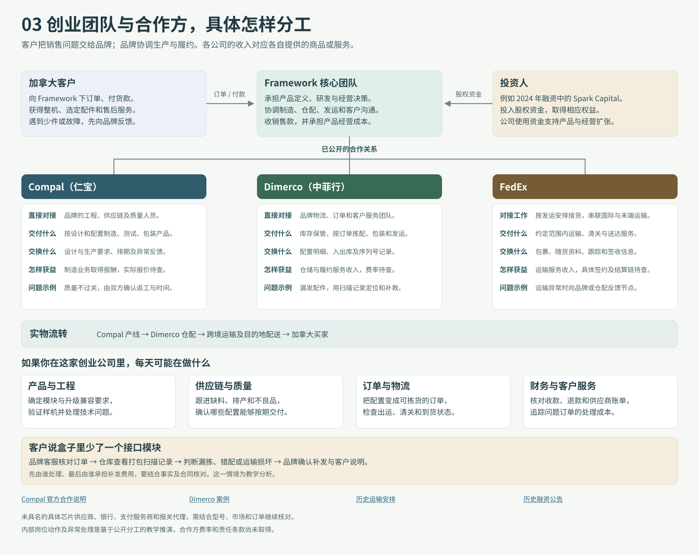

章节目录
第 04 章 · 主案例 · Framework
一家创业公司怎样做生意
从可维修、可升级的笔记本，理解创业团队怎样获得订单、组织生产并负责跨境交付。
思维导图

从客户需求看产品、制造、跨境交付、收入和融资。

加拿大预订是教学串联。历史运输案例和现行收款条款分别标注。

Compal、Dimerco 与 FedEx 对应制造、仓配和运输服务。具体费用待查。
具体情境
公开事实 Framework 官方介绍称公司 2020 年起步，2021 年开始交付 Laptop 13。可更换的模块、整机和 DIY 版本是其产品方案的一部分。客户购买的不只是眼前的配置，后续能否找到适配零件也会影响购买判断。
教学情境 一位加拿大买家预订一台电脑并选了键盘和扩展模块。品牌接单并跟踪配置需求，供应链核对物料与产能，制造方交合格成品，仓库按订单拣配，跨境服务方将货送到买家。品牌负责处理错漏发、退款与售后。
历史披露 Framework 的制造介绍列出 Compal 参与桃园制造。Dimerco 公布了仓储、拣配与序列号追踪的合作案例。Framework 2022 年的交付文章介绍过 FedEx 集运。不同年份披露说明可核实的业务机制，不能用来认定某一实际订单采用了完整的同一路线。
客户承诺如何改变经营
如果公司承诺能更换主板与配件，就要为旧型号管理兼容性、可用配件与售后流程。配件可能形成后续收入，也需要额外的采购、库存与履约工作。团队应跟踪配置销量、缺料影响、退货和售后成本，才能判断承诺是否可持续。
融资是另一条资金线。Framework 2024 年公开宣布新增 1,800 万美元融资，其中 1,700 万美元为 A-1 轮。融资帮助经营扩张，具体订单是否赚钱还要核对收入、成本和费用。
关键判断
- 品牌团队保留产品与交付责任
- 工厂、仓配与运输方执行约定工作。产品标准、客户承诺和异常决策需要内部负责人串起来。
- 订金、尾款与实际产能放在同一条时间线上
- Framework 的销售条款描述了预订款与备货发运时的尾款。预订可观察需求，同时存在取消和供应延期，不能直接视为已交付收入。
讨论题
先讨论，再展开参考分析。
客户打开盒子发现少了一块接口模块，谁先处理？
品牌客服先查订单配置和包裹记录，仓库复核拣配或打包扫描。确认问题后再安排补发，并依据合同及原因核对费用承担。